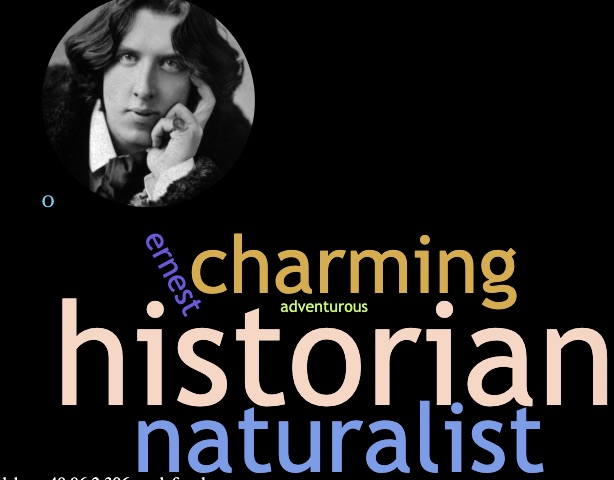

H
H
H
H
Know Me helps you better understand someone that you are first meeting, using information provided by the person and by others like you.
The people nearest you are shown, if they have Know Me running. If not, use
to share the app with them via , etc.When you pick someone, you are shown what other people have said.
After you've interacted with the person, you can pick one of these words that you agree with, or type in your own positive word.
There are no accounts or sign in. People nearby recognize you by your picture and initial only.
This info will be set up now. You can change it any time in "Settings":
You can even reset entirely, or transfer to another device (not implemented yet).
Other than your first initial, this info is shared only if you explicitly share your contact info with a specific person.
If you don't need to share contact info, everything except first initial is optional (and can be updated later).
We need a selfie so that strangers can recognize you among the nearby users.
Finally, you can suggest up to three words to describe yourself. These form the start of the word cloud that is shown to everyone who wants know about you (and who have Know Me open near you so that you can learn about them). You can change them at any time in "Settings".